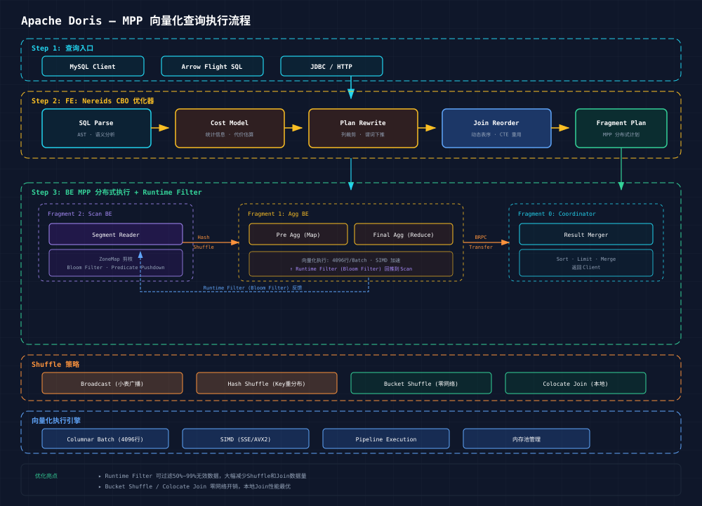

Doris 查询引擎是其高性能的核心，基于自研 C++ 向量化执行引擎，支持标准 SQL 和 MPP 分布式执行。

Client (MySQL Protocol / HTTP / Arrow Flight)
↓
FE (Frontend) — Java
├── SQL Parser (ANSI SQL 兼容)
├── Analyzer (语义分析，Catalog 元数据校验)
├── Optimizer
│ ├── RBO (Rule-Based Optimizer, v1.x~v2.x)
│ └── Nereids (CBO, v2.1+ 实验，v3.0 稳定)
│ ├── 统计信息收集
│ ├── Cost Model (CBO 选 Best Plan)
│ └── Plan Rewrite (列裁剪、谓词下推、常量折叠)
├── Coordinator
│ ├── Plan Fragment 生成 (MPP 分布式计划)
│ ├── Parallelism 计算
│ └── Schedule to BEs
└── Result Merger (结果合并 → Client)
↓
BE (Backend) — C++
├── Plan Fragment Executor
│ ├── Scan Node → Segment Reader
│ │ ├── ZoneMap 剪枝
│ │ ├── Bloom Filter 过滤
│ │ └── Page 级 IO
│ ├── Join Node
│ │ ├── Hash Join (Build/Probe)
│ │ ├── Broadcast Join (小表广播)
│ │ └── Shuffle Join (大表重分布)
│ ├── Agg Node (预聚合)
│ └── Sort / Limit / Exchange
├── 向量化引擎
│ ├── Columnar Batch (4096行/Batch)
│ ├── SIMD 指令集加速 (SSE/AVX2)
│ └── 内存池管理 (避免碎片)
└── Runtime Filter
├── Bloom Filter 生成 (Join Build 侧)
└── 广播到 Scan Node (提前过滤)Doris MPP 执行分为三个阶段：
Phase 1：Plan Fragment 分发
FE 将 SQL Plan 拆分为多个 Fragment，每个 Fragment 由 BE 上的一个 Instance 执行：
Fragment 0 (Coordinator): Result Sink → Merge → Client
Fragment 1 (Agg BE): Final Agg ← EXCHANGE ←
Fragment 2 (Scan BE): Pre Agg → EXCHANGE →Phase 2：Data Shuffle
BE 间通过 BRPC 进行数据交换，交换策略：
| 策略 | 触发条件 | 说明 |
|---|---|---|
| Broadcast | 右表数据量 < broadcast_row_limit | 全量广播到所有 Scan Node |
| Hash Shuffle (Partition) | Join Key 或 Agg Key | 按 Key Hash 重分布 |
| Bucket Shuffle | Join Key 与分桶键一致 | 直接按 Bucket 映射，避免 Shuffle |
| Colocate Join | 两张表 Colocation Group 相同 | 零 Shuffle，本地 Join |
Phase 3：Vectorized Execution
BE 内部以 4096 行为一个 Columnar Batch 流水线处理：
| 阶段 | 优化器 | 特点 |
|---|---|---|
| v0.x~v1.x | 无优化器 | 手工编写的 SQL Rewrite 规则 |
| v1.x~v2.x | RBO (Rule-Based) | 固定规则重写，无成本模型 |
| v2.1+ | Nereids (CBO, 实验) | 基于成本的优化器，统计信息驱动 |
| v3.0+ | Nereids (CBO, 稳定) | 默认优化器，支持 Join Reorder、CTE 重用 |
| v4.0 (计划) | Nereids + Falcon | 新执行引擎，Runtime Filter 增强 |
Nereids CBO 核心能力：
Doris Runtime Filter 是查询加速的核心技术：
1. Small Table (右表) Join Key → Build Bloom Filter
2. Broadcast Bloom Filter to Scan Node (左表)
3. Scan Node 利用 Bloom Filter 过滤不需要的行
4. 大幅减少 Shuffle & Join 数据量典型收益：大表 Join 小表，Runtime Filter 可过滤 50%~99% 的无效数据。
Doris 3.0 支持原生联邦查询多种数据源：
| Catalog 类型 | 支持引擎 | 能力 |
|---|---|---|
| Hive | Hive Metastore | 读 Hive 表，支持多文件格式 |
| Iceberg | Iceberg REST / HMS | 读 Iceberg v2 表，支持 Time Travel |
| Paimon | Filesystem / HMS | 读 Paimon 表，支持 CDC |
| Hudi | HMS | 读 Hudi MOR/COW 表 |
| JDBC | MySQL/PG/Oracle | 联邦查询 RDBMS |
| ES | Elasticsearch | 联邦查询 ES |
-- 创建 Iceberg Catalog
CREATE CATALOG iceberg_catalog PROPERTIES (
"type" = "iceberg",
"iceberg.catalog.type" = "rest",
"uri" = "http://iceberg-rest:8181/"
);
-- 联邦 Join 查询
SELECT d.user_id, d.order_count, i.item_name
FROM doris_db.user_order_daily d
JOIN iceberg_catalog.item_db.items i ON d.item_id = i.item_id;